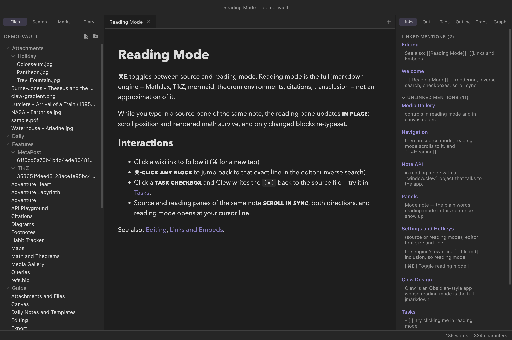

Reading mode
How rendering works
Press ⌘E and Clew stops showing you Markdown and starts showing you a document. What appears is not a preview approximation: it is the output of the jmarkdown typesetting engine — the same engine that compiles the note to LaTeX and PDF — with live mathematics, theorem environments, citations, diagrams, and cross-references. This chapter explains what reading mode renders, how it stays in step with your editing, and the ways the rendered page talks back: clicks that navigate, checkboxes that write to your files, and an inverse search that jumps you to the exact source line of anything you see.
Toggling between editing and reading
Every note tab is in one of two modes. Source mode is the editor; reading mode is the rendered note. ⌘E (the Toggle reading mode command) flips between them, and the tab remembers which mode it is in. When you switch to reading mode, the rendered view opens at the line your cursor was on, so a mid-document toggle does not throw you back to the top.
The return trip keeps your place too. If you scroll while reading — or follow a link to a heading further down — flipping back to source mode opens the editor at the block you were reading, with the cursor on it, ready to type. Only a move you actually made counts: go out to reading mode and straight back without scrolling and you land exactly where you were, cursor and column untouched.
The two modes are not an either/or. Because Clew's workspace supports splits — ⌘\ splits the active pane to the right, ⌘⇧\ splits it downward — the classic arrangement is the same note open twice: source on the left, reading mode on the right. Each pane keeps its own mode, and the two panes of the same note cooperate in ways described below (live updating and scroll sync). This side-by-side view is how most long-form writing in Clew gets done.

What renders
Reading mode runs the full jmarkdown engine over your note, so the rendered page carries everything the engine can typeset:
- The dialect —
/italics/,*strong*,==highlights==, TeX-style sub- and superscripts, and the rest of the jmarkdown dialect. - Mathematics — inline
$…$and display$$…$$via a locally bundled MathJax, plus numbered equations and theorem environments. - Citations — the
\citefamily resolved against your BibTeX files, with a formatted bibliography. - Diagrams — mermaid, TikZ, and MetaPost, covered in their own chapter, and interactive Leaflet maps.
- Footnotes — written inline where they attach:
[fn: an anonymous note]auto-numbers itself, and[^label: a labelled note]names its label. Standard reference-style[^1]footnotes work as well. Either way the mark renders as a superscript and the collected notes appear as a list at the end of the document. - Alerts — GitHub-style callout boxes, described below.
- Tables — rendered as real HTML tables.
- Code — fenced code blocks are syntax-highlighted at render time by highlight.js, so the coloring is part of the document rather than a client-side afterthought.
- Links and embeds —
[[wikilinks]]become navigable links, and![[embeds]]transclude notes, images, audio, video, and PDFs (see Links and embeds).
Alerts
A blockquote whose first line is a bracketed type keyword renders as a colored callout box:
You write
> [!NOTE]
> Alerts render as callout boxes in reading mode,
> and as colored boxes in LaTeX and PDF export.
Seven types are available: the five GitHub-standard ones —
[!NOTE], [!TIP], [!IMPORTANT],
[!WARNING], [!CAUTION] — plus two jmarkdown
additions, [!QUESTION] and [!SUGGESTION].
Each gets its own icon and color. The same source survives
export: in LaTeX and PDF output an alert
becomes a colored tcolorbox rather than leaking HTML into
the print file.
> [!note] form is the same syntax Obsidian calls
callouts, so these boxes render in both apps. The five GitHub types
exist on both sides; beyond those, each app has types the other does
not (Obsidian has many more decorative variants; Clew adds
question and suggestion). An unknown type
is not recognised as an alert at all — it renders as an ordinary
blockquote with the [!TYPE] line visible as text.
Live re-rendering
Reading mode is not a snapshot. Clew auto-saves your edits to disk about a second after you stop typing, the engine re-renders the note from the saved file, and the rendered pane patches itself in place. The new HTML is diffed against the old and only the parts that actually changed are replaced, which is why an update never costs you anything you care about:
- your scroll position stays where it was;
- rendered mathematics does not flash back to raw TeX;
- a Leaflet map keeps its pan and zoom unless the map's own configuration changed;
- embedded canvases and other live elements are left running;
- scripts in the note are not re-executed on every keystroke.
So with source and reading panes side by side, the rendered page follows your typing with a delay of roughly a second — the auto-save debounce plus the render — while behaving like a stable document rather than a page being torn down and rebuilt.
One design consequence worth knowing: because the engine renders from the saved file, disk is the source of truth. What you see in reading mode is always the rendering of what is actually in the file — never of an unsaved buffer state that could differ from what another app, or a sync service, sees.
< character through unescaped. Ordinary code is
unaffected, but a literal <script> tag inside a code
example will be interpreted by the page rather than displayed, and can
swallow the rest of the note. If you need to show HTML markup in a code
block, write the angle brackets as entities
(<script>).
Scroll sync
When the same note is open in a source pane and a reading pane, the two scroll in sync, in both directions. Scroll the editor and the rendered pane follows; scroll the rendered pane and the editor follows. The sync tracks your position by source line — the engine stamps every rendered block with the line it came from — so it stays accurate even though a paragraph of Markdown and its typeset form are rarely the same height.
Only a scroll you perform is propagated; the pane that follows suppresses its own echo, so the two sides never fight each other. The rule that falls out is the natural one: the last pane you actually scrolled wins.
Inverse search: from the page back to the source
Anyone who has used a LaTeX editor knows inverse search: click the typeset output, land on the source line. Clew's reading mode does the same. ⌘-click any block in the rendered note — a paragraph, a heading, a list item, an equation — and the tab flips to source mode with the cursor on the exact line that produced what you clicked. On Windows and Linux the gesture is Ctrl-click.
This works because renders carry per-block source-line information all the way into the page. It is the fastest way to fix the typo you just noticed while reading: ⌘-click it, correct it, and watch the rendered pane patch itself a moment later.
The one place ⌘-click means something else is on a link, where it opens the link in a new tab instead — links come next.
Interacting with the rendered page
Following links
Wikilinks in reading mode are real links. Click one to open the
target in the current tab — in reading mode, so browsing a chain of
rendered notes feels like reading a wiki — or ⌘-click to
open it in a new tab. External http(s) links open in your
system browser. obsidian:// links get their Clew
equivalent instead of bouncing off a scheme handler that may not
exist: open opens the note here (if it is in this vault),
search runs the search here, show-plugin
takes you to that plugin's web page, and anything else says by name
that it has no Clew equivalent. The rendered page itself never
navigates away from your note, whatever a link or a script inside it
tries to do.
Checkboxes are live
Task checkboxes in reading mode are not decorations. Tick one and Clew
writes the change back into the Markdown source — the
- [ ] on that line becomes - [x] in the
file, and every other view of that note follows. Untick it and the
edit reverses. There is no separate "task state" anywhere: the file is
the state.
You write
- [ ] draft the abstract
- [x] email the co-author
This write-back also works at a distance. A ```tasks
block gathers checkboxes from across the vault
(see Tasks and kanban); each
gathered item remembers which note and line it came from, and ticking
it in the query's output rewrites that note. Reading mode is
the front half of Clew's writable-database story: the page you read is
also a surface you can edit through.
Notes with queries re-render on any change
A note containing a ```query, ```tasks, or
```kanban fence depends on the whole vault, not just on
its own file — its results may change when any note changes.
Clew tracks this: whenever a Markdown file anywhere in the vault is
saved, every open note that contains a query fence is re-rendered
(briefly debounced, so a burst of typing causes one refresh rather
than many). A dashboard note sitting in a split really does behave
like a dashboard: edit a project note on the left and the table on the
right updates by itself. The details of the query system live in
Queries.
Under the hood, briefly
Two facts about the machinery explain most of what you observe. First, the engine runs in a separate worker process, never inside the app itself — a render that goes wrong cannot take the editor with it, and a heavy note cannot freeze your typing; a pre-warmed standby worker keeps re-renders fast. Second, each render is a complete typeset document — full MathJax pass, resolved citations, numbered environments — and the in-place patching described above is what makes complete re-renders cheap enough to run on every save.
\cite
commands, dialect emphasis, TikZ — appear in Obsidian as the literal
text you typed, not as errors. Checkbox write-back is fully compatible:
a task ticked in Clew is ticked in Obsidian, because both apps read the
same [x].
Reference
| Action | Gesture |
|---|---|
| Toggle reading mode | ⌘E |
| Split the pane right / down | ⌘\ / ⌘⇧\ |
| Follow a wikilink | Click |
| Open a wikilink in a new tab | ⌘-click the link |
| Inverse search (jump to the source line) | ⌘-click any non-link block |
| Toggle a task in the source file | Click its checkbox |
| Open an external link in the browser | Click |
| Close tab / new tab / split (while the preview has focus) | ⌘W / ⌘T / ⌘\ |
| Alert type | Source |
|---|---|
| Note, Tip, Important, Warning, Caution | > [!NOTE] … > [!CAUTION] (GitHub-standard; also Obsidian callouts) |
| Question, Suggestion | > [!QUESTION], > [!SUGGESTION] (jmarkdown additions) |
See also
- The jmarkdown dialect — the inline syntax reading mode gives meaning to.
- Math and theorems, Citations and bibliographies, Diagrams, and Interactive maps — a chapter each for the engine's headline features.
- Navigation, tabs and splits — the split workspace this chapter leans on.
- Queries and Tasks and kanban — the live blocks that re-render with the vault and write back to it.
- Exporting notes — the same engine, pointed at HTML, LaTeX, and PDF files instead of the screen.